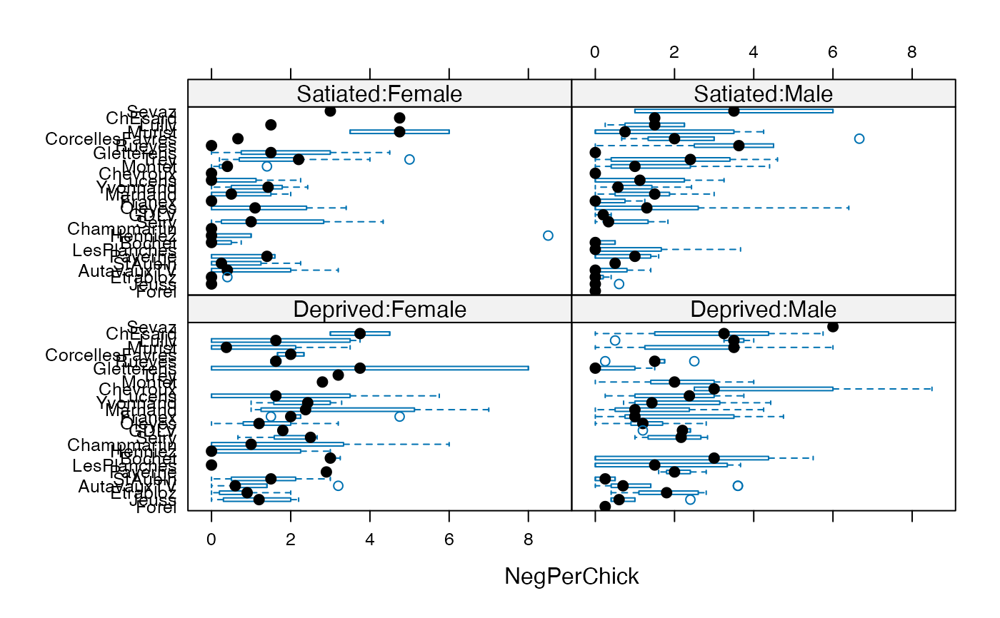

Owls.RdBegging by owl nestlings
data(Owls)
The Owls data set is a data frame with
599 observations on the following variables:
Nesta factor describing individual nest locations
FoodTreatment(factor) food treatment: Deprived
or Satiated
SexParent(factor) sex of provisioning parent: Female or Male
ArrivalTimea numeric vector
SiblingNegotiationa numeric vector
BroodSizebrood size
NegPerChicknumber of negotations per chick
Roulin, A. and L. Bersier (2007) Nestling barn owls beg more intensely in the presence of their mother than in the presence of their father. Animal Behaviour 74 1099--1106. doi: 10.1016/j.anbehav.2007.01.027 ; http://www.highstat.com/Books/Book2/ZuurDataMixedModelling.zip
Zuur, A. F., E. N. Ieno, N. J. Walker, A. A. Saveliev, and G. M. Smith (2009) Mixed Effects Models and Extensions in Ecology with R; Springer.
Access to data kindly provided by Alain Zuur
#>if (FALSE) { ## Fit negative binomial model with "constant" Zero Inflation : owls_nb1 <- glmmTMB(SiblingNegotiation ~ FoodTreatment*SexParent + (1|Nest)+offset(log(BroodSize)), family = nbinom1(), zi = ~1, data=Owls) owls_nb1_bs <- update(owls_nb1, . ~ . - offset(log(BroodSize)) + log(BroodSize)) fixef(owls_nb1_bs) }